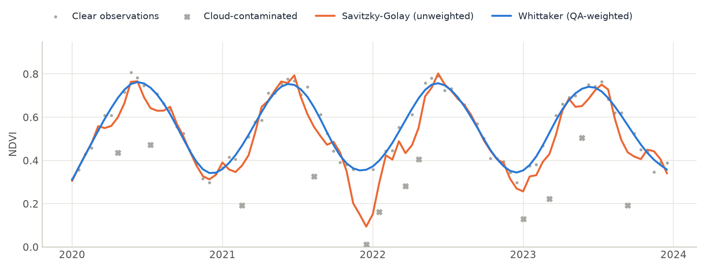

STAC Data Cubes¶
Build an analysis-ready data cube straight from a cloud catalog. You give an area, dates and bands, and get back a lazy xarray cube: nothing is downloaded until you compute, and then only the pixels you need are read.
xarray.DataArray shaped (time, band, y, x)STAC (SpatioTemporal Asset Catalog) is the standard way cloud providers publish satellite imagery. Zeit searches a catalog, keeps the images that match your query, and assembles them with stackstac into one aligned cube.
1. Query a catalog¶
Select the area with a bounding box, a vector file (vector_path), or tile IDs: MGRS for Sentinel-2, WRS-2 path/row for Landsat.
import zeit
# Option A: Bounding Box
cube = zeit.build_time_series(
source="earth_search",
collection="sentinel-2-l2a",
bbox=[-48.5, -22.5, -48.0, -22.0],
start_date="2022-01-01",
end_date="2022-12-31",
bands=["red", "green", "blue", "nir"]
)
# Option B: MGRS Tiles (Sentinel-2)
cube_tiles_s2 = zeit.build_time_series(
source="earth_search",
collection="sentinel-2-l2a",
tiles=["22JFQ", "22JGQ"], # Fetch specific Sentinel-2 MGRS tiles
start_date="2022-01-01",
end_date="2022-12-31",
bands=["red", "green", "blue", "nir"]
)
# Option C: WRS-2 Path/Row Tiles (Landsat)
cube_tiles_l8 = zeit.build_time_series(
source="earth_search",
collection="landsat-c2-l2",
tiles=["215065"], # 6-digit Path/Row string (Path 215, Row 065)
start_date="2022-01-01",
end_date="2022-12-31",
bands=["red", "green", "blue", "nir"]
)
2. Mask clouds¶
Zeit can automatically identify the satellite platform (Sentinel-2, Landsat) and apply semantic cloud masking natively before returning the cube. Just pass apply_cloud_mask=True.
This will automatically download the respective Quality Assurance (QA) band (like scl for Sentinel) and mask out clouds, shadows, and cirrus.
cube_clean = zeit.build_time_series(
source="earth_search",
collection="sentinel-2-l2a",
tiles=["22JFQ"],
start_date="2022-01-01",
end_date="2022-12-31",
bands=["red", "green", "blue", "nir"],
apply_cloud_mask=True # Clouds are masked out!
)
3. Other sensors (MODIS and Sentinel-1)¶
build_time_series is not hardcoded to Sentinel-2/Landsat — it talks to any STAC API, so switching source/collection/bands is enough to pull other sensors from a catalog that hosts them. Microsoft Planetary Computer is the most complete public option for MODIS and Sentinel-1.
Caveat: apply_cloud_mask=True only knows how to decode Sentinel-2's scl and Landsat's qa_pixel bands (see zeit/cube.py). For MODIS and Sentinel-1, leave apply_cloud_mask=False and handle QA/no cloud-masking as shown below.
MODIS (vegetation indices, 250m/16-day)
import zeit
from zeit.qc import qc_modis_summary
cube_modis = zeit.build_time_series(
source="planetary_computer",
collection="modis-13Q1-061", # NDVI/EVI 250m, 16-day composites (modis-09A1-061 for 500m/8-day surface reflectance)
bbox=[-52.10, -12.55, -51.95, -12.40],
start_date="2010-01-01",
end_date="2023-12-31",
bands=["250m_16_days_NDVI", "250m_16_days_pixel_reliability"],
apply_cloud_mask=False, # not recognized for MODIS - masked manually below
)
ndvi = cube_modis.sel(band="250m_16_days_NDVI") * 0.0001 # apply the collection's scale factor
qa = cube_modis.sel(band="250m_16_days_pixel_reliability")
# 0=good, 1=marginal, 2=snow/ice, 3=cloudy -> [1.0, 0.5, 0.2, 0.2]
weights = qc_modis_summary(qa)
For 500m 8-day surface reflectance (modis-09A1-061), decode the sur_refl_state_500m QA band with zeit.qc.qc_modis_state instead.
Sentinel-1 SAR (radar, no clouds)
cube_s1 = zeit.build_time_series(
source="planetary_computer",
collection="sentinel-1-rtc", # radiometrically terrain-corrected, analysis-ready (prefer this over the raw "sentinel-1-grd" unless you plan to do RTC yourself)
bbox=[-52.10, -12.55, -51.95, -12.40],
start_date="2020-01-01",
end_date="2023-12-31",
bands=["vv", "vh"],
resolution=10,
apply_cloud_mask=False, # SAR is unaffected by clouds - never pass apply_cloud_mask=True here
)
Radar backscatter is dense (Sentinel-1 revisits every 6-12 days regardless of cloud cover), which makes it a strong complement to optical CCDC/LandTrendr/Mann-Kendall runs in persistently cloudy regions. Check the actual pixel value range before feeding it downstream — RTC gamma-naught can come back as either dB or linear power depending on the processing pipeline, and that changes how you interpret slope/magnitude.
Neither earth_search nor brazil_data_cube currently expose MODIS or Sentinel-1 collections, so planetary_computer is the practical default for both. source also accepts any custom STAC API URL (e.g. a national or provider-specific SAR catalog) if you need one outside the three built-in aliases.
Landsat and Sentinel-2 in one series
HLS (Harmonized Landsat Sentinel-2) has both sensors processed alike, on one 30 m grid, with Sentinel-2 adjusted to Landsat 8's bands. Planetary Computer serves its two products; asking for both, with the bands named by role, gives one series sorted by time, each band read from its own product's asset (the NIR is L30's B05 and S30's B8A) and the Fmask band masking clouds and shadows:
hls = zeit.build_time_series(
source="planetary_computer",
collection=["hls2-l30", "hls2-s30"],
bbox=[-52.10, -12.55, -51.95, -12.40],
start_date="2019-01-01",
end_date="2024-12-31",
bands=["blue", "green", "red", "nir", "swir1", "swir2"],
apply_cloud_mask=True,
resolution=30,
epsg=32722,
) # (time, band, y, x): the six bands, and Fmask
For dates or bands HLS does not have (before 2013, Sentinel-2's 10 m bands), zeit.bandpass_adjust applies HLS's bandpass step to Sentinel-2 L2A and joins it with Landsat Collection 2. It removes only part of the step between the sensors; the reference compares the two on a stable site.
4. Composite to a regular time step¶
Raw STAC data usually comes in irregular time steps (e.g., passing every 5, 8, or 12 days). For advanced Machine Learning and TWDTW, you must regularize the cube to fixed temporal steps.
You can use zeit.regularize_time_series to composite these observations into regular windows (e.g., 16-day composites) using multi-dimensional medoid or median strategies. Because it uses xarray, this computation remains fully lazy!
from zeit import regularize_time_series
# Create a 16-day Medoid composite
cube_16d = regularize_time_series(cube_clean, freq="16D", method="medoid")
# The output has regular 16-day steps on the 'time' dimension
print(cube_16d.time)
Annual composites for LandTrendr¶
LandTrendr needs one cloud-free value per pixel per year. zeit.build_annual_composites builds that stack directly: one masked median (or medoid) of a seasonal window per year, as reflectance, with the years without scenes left as NaN so the time axis has no gaps.
comp = zeit.build_annual_composites(
source="planetary_computer",
collection="landsat-c2-l2",
bbox=[9.63, 50.92, 12.06, 52.43], # one 150 km tile
start_year=1985,
end_year=2024,
season=("06-01", "09-30"),
bands=["nir08", "swir22"], # only what NBR needs
epsg=3035,
)
nbr = (comp.sel(band="nir08") - comp.sel(band="swir22")) / (comp.sel(band="nir08") + comp.sel(band="swir22"))
zeit.save_raster(nbr, "nbr_1985_2024.tif")
It reads the scenes as raw integers and reduces each spatial chunk as soon as all of its scenes have arrived, so memory stays bounded however many scenes a year has (in our test, a lazy cube.median("time") over a 150 km tile with 100 scenes exhausted 68 GB of RAM). See STAC download throughput for timings.
Download speed
- Read only what you need. Download time grows with scenes × bands: each extra band adds about a third for an NBR stack (2 bands + QA).
- Pick the provider close to you. The same Landsat Collection 2 files are on Planetary Computer (Azure West Europe, free) and on Earth Search (AWS us-west-2, requester-pays bucket: needs AWS credentials and the requester pays about US$ 0.09/GB leaving AWS). Latency matters as much as bandwidth for COG range reads.
- Run next to the data for many tiles. From a VM in the provider's region, transfer is free and bandwidth is 10–100× a typical office link.
- Don't push the thread count. The defaults (2048 px chunks, Dask's default threads) are already close to a 200 Mbit/s link's limit. Well beyond about 64 threads in one process, GDAL can deadlock inside its HTTP layer.
5. Compute spectral indices¶
STAC catalogs serve files, not computations, so the bands an index needs always travel over the network: NDVI needs red and nir. What zeit avoids is storing them. The cube is lazy, so the index is computed chunk by chunk as the bands arrive, and only the index is written to disk.
The index is pre-calculated by the provider. Some catalogs (such as Brazil Data Cube) serve an ndvi asset, or MODIS vegetation indices (modis-13Q1-061 on Planetary Computer). Load it like any band:
cube_ndvi = zeit.build_time_series(
source="brazil_data_cube",
collection="CBERS4A_WFI_L4_SR",
tiles=["022024"],
bands=["ndvi"],
)
Compute it from reflectance. zeit.compute_indices finds each band role by its usual asset names (red / B04, nir08 / nir / B08...), so the same call works for Landsat and Sentinel-2 on every built-in catalog. Available: NDVI, EVI, SAVI, kNDVI, NBR, NDMI, NDWI, MNDWI, and NDFI (Landsat: it unmixes the six reflective bands).
cube_raw = zeit.build_time_series(
source="planetary_computer",
collection="sentinel-2-l2a",
tiles=["22JFQ"],
bands=["B02", "B04", "B08", "B12"], # only what the indices need
apply_cloud_mask=True,
)
idx = zeit.compute_indices(cube_raw, ["NDVI", "EVI", "NBR"]) # (time, 3, y, x), still lazy
Spectral temporal metrics¶
Spectral temporal metrics (STMs) summarize a season per pixel: the median, percentiles and spread of each index over every clear observation. They are a compact, gap-free input for land cover classification. zeit.build_spectral_temporal_metrics builds them per year without ever holding the observations: each spatial chunk is read once as raw integers, masked, turned into indices observation by observation, and reduced to the metrics.
stm = zeit.build_spectral_temporal_metrics(
source="planetary_computer",
collection="landsat-c2-l2",
bbox=[-47.95, -15.85, -47.90, -15.80],
start_year=2015,
end_year=2024,
season=("05-01", "09-30"), # dry season
indices=["NDVI", "NBR", "swir1"], # indices, band roles or asset names
metrics=["median", "p10", "p90", "iqr", "count"],
epsg=32723,
)
# (time=10, band=15, y, x): NDVI_median, NDVI_p10, ..., swir1_count
zeit.save_raster(stm.sel(year=2024), "stm_2024.tif")
The index is computed on every observation before the statistics, so NDVI_median is the median NDVI, not the NDVI of the median bands. Band names and order match the Earth Engine version (download_gee_timeseries(composite_type="stm")).
6. Smooth noisy series¶
Even after masking and compositing, some cloud-affected values remain. zeit.smooth smooths a cube along time, keeping its dates and georeferencing:

smooth_sg = zeit.smooth(ndvi, method="savgol", window=7, polyorder=2)
weights = clear.astype(float) # 1 = clear, 0 = cloudy, or QA weights from zeit.qc
smooth_wh = zeit.smooth(ndvi, lmbda=10, weights=weights)
lmbda sets the smoothness of the Whittaker smoother: larger values give a stiffer curve. It takes unevenly spaced dates as they are, and observations that are NaN (masked clouds) weigh 0, so the curve fills them. For per-observation weights from a QA band, see zeit.qc (qc_sentinel2_scl, qc_modis_summary, qc_modis_state). zeit.plot(ndvi, fit=smooth_wh) draws the curve over any pixel you click.
Local GeoTIFFs instead of a catalog¶
Already have the files on disk? load_raster builds the same kind of lazy cube from a folder, parsing dates and bands from the file names.
import zeit
# Files like "SENTINEL_20220101_B02.tif": the regex captures (?P<date>...) and (?P<band>...)
cube_local = zeit.load_raster(
"/path/to/my/tiffs",
pattern=r"_(?P<date>\d{8})_(?P<band>B\d{2})\.tif$",
date_format="%Y%m%d",
recursive=True,
chunks="auto",
) # (time, band, y, x), lazy
# Scenes on different grids (two UTM zones, two orbits): put them on one as they are read
cube_local = zeit.load_raster("/path/to/my/tiffs", pattern=..., like="reference.tif", chunks="auto")
Next steps¶
The cube is ready for any analysis. Common next steps:
- one value per year for LandTrendr or Mann-Kendall:
build_annual_composites; - regular 16-day composites for BFAST, phenology and TWDTW;
- every clear image, multi-band, for CCDC.